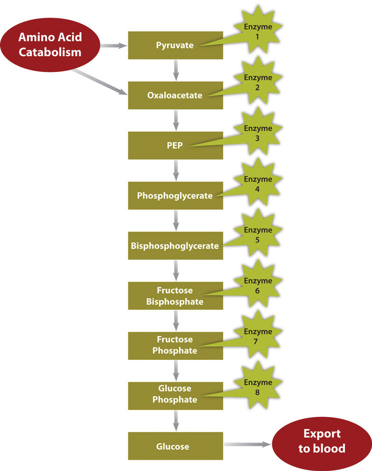
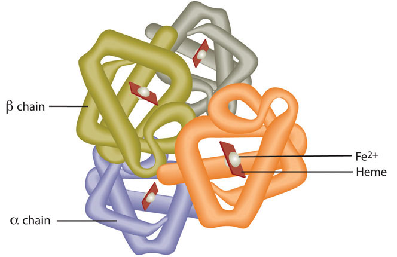

Micronutrients come from many sources and some may surprise you; get them in the right amounts to support metabolism and blood health.
How to Get Iron into Your Diet
(click to see video)View this video for simple steps you can take to obtain and maintain healthy iron levels in your body.
In a small town in the Appalachian Mountains, Joseph Lodge founded Lodge Iron Cookware in 1896. Today it is still a family-run business that provides Americans with pioneer-style iron cookware. Iron cookware was, and still is, prized for its heat retention, even heating, and durability. In fact, many pans sold one hundred years ago are still in use today. Unbeknownst to the American pioneers, the cookware also leaches iron, an essential mineral, into foods as they are cooked in cast-iron hardware.
Iron has several vital functions in the body. Primarily it is the oxygen carrier of the protein hemoglobin, which is found in red blood cells. Oxygen is essential for cellular metabolism. A reduction in the oxygen-carrying capacity of red blood cells hampers the synthesis of energy and consequently cell function. Additionally, iron is required for energy production and enzymatic synthesis of RNA and DNA. Therefore cells that are rapidly dividing are acutely sensitive to an iron deficiency. Since red blood cells are under a constant state of renewal in the body, low iron levels impede their synthesis, eventually causing anemia. A person with anemia experiences fatigue, shortness of breath, dizziness, muscle weakness, and pale skin. In infants and children iron-deficiency anemia can impair growth, motor control, mental functioning, behavior, and performance in school. Iron deficiency is the number-one nutritional deficiency in the world, and even in America it affects 10 percent of women of childbearing age and many infants, children, and adolescents.
Dietary sources of iron include red meats, poultry, leafy green vegetables, prunes, raisins, egg yolks, lentils, oysters, clams, artichokes, and enriched cereal grains. While there are many food sources of iron, only a small fraction of dietary iron is absorbed. One method of increasing dietary intake of iron is cooking foods in an iron skillet. Acidic foods high in moisture content, such as tomatoes, absorb more iron during cooking than nonacidic foods. For example, cooking spaghetti sauce in iron cookware can increase the iron content ten-fold. How much iron leaches into food is also dependent on cooking times; the longer food is in the pan the more iron is absorbed into the food. Stirring food more often increases contact time and thus more iron is absorbed from the cookware. The utility of iron cookware in increasing dietary intake of iron has prompted some international public health organizations to distribute iron cookware to high-risk populations in developing countries as a strategy to reduce the prevalence of iron-deficiency anemia worldwide.
What are the different ways to build iron storehouses in your body without taking a pill?
In this chapter, we will discuss the importance of blood and its vital role in support of metabolism and pull together what we have learned about macronutrient metabolism. You will also learn the important roles micronutrients have in metabolism and how they support blood function and renewal. We will also consider food sources of these valuable nutrients. Read the facts, then decide the best way to supplement your diet with iron friendly eating and cooking.
You know you cannot live without blood, and that your heart pumps your blood over a vast network of veins and arteries within your body, carrying oxygen to your cells. However, beyond these basic facts, what do you know about your blood?
Blood is a connective tissue of the circulatory system, transporting absorbed nutrients to cells and waste products from cells. It supports cellular metabolism by transporting synthesized macromolecules and waste products. Additionally, it transports molecules, such as hormones, allowing for communication between organs. The volume of blood coursing throughout an adult human body is about 5 liters (1.3 gallons) and accounts for approximately 8 percent of human bodyweight.
Blood is about 78 percent water and 22 percent solids by volume. The liquid part of blood is called plasma and it is mostly water (95 percent), but also contains proteins, ions, glucose, lipids, vitamins, minerals, waste products, gases, enzymes, and hormones. You learned in Chapter 6 "Proteins" and Chapter 7 "Nutrients Important to Fluid and Electrolyte Balance" that the protein albumin is found in high concentrations in the blood. Albumin helps maintain fluid balance between blood and tissues, as well as helping to maintain a constant blood pH. In Chapter 7 "Nutrients Important to Fluid and Electrolyte Balance" we learned that the water component of blood is essential for its actions as a transport vehicle, and that the electrolytes carried in blood maintain fluid balance and a constant pH. Furthermore the high water content of blood helps maintain body temperature, and the constant flow of blood distributes heat throughout the body. Blood is exceptionally good at temperature control, so much so that the many small blood vessels in your nose are capable of warming frigid air to body temperature before it reaches the lungs.
The cellular components of blood include red blood cells, white blood cells, and platelets. Red blood cellsThe most numerous cells in blood, which transport oxygen to all cells in the body. are the most numerous of the components. Each drop of blood contains millions of them. Red blood cells are red because they each contain approximately 270 million hemoglobin proteins, which contain the mineral iron, which when bound to oxygen turns red. The most vital duty of red blood cells is to transport oxygen from the lungs to all cells in the body so that they can make energy via aerobic metabolism. The white blood cellsCells of the immune system that survey the entire body looking for foreign invaders to destroy. that circulate in blood are part of the immune system and they survey the entire body looking for foreign invaders to destroy. They make up about 1 percent of blood volume. PlateletsFragments of cells that, when stimulated by blood vessel injury, rush to plug up the wound. are fragments of cells that are always circulating in the blood in case of an emergency. When blood vessels are injured platelets rush to the site of injury to plug the wound. Blood is under a constant state of renewal and is synthesized from stem cells residing in bone marrow. Red blood cells live for about 120 days, white blood cells live anywhere from eighteen hours to one year, or even longer, and platelets have a lifespan of about ten days.
What Is Blood?
(click to see video)Watch this brief animation on the importance of blood components.
Once absorbed from the small intestine, all nutrients require transport to cells in need of their support. Additionally, molecules manufactured in other cells sometimes require delivery to other organ systems. Blood is the conduit and blood vessels are the highway that support nutrient and molecule transport to all cells. Water-soluble molecules, such as some vitamins, minerals, sugars, and many proteins, move independently in blood. Fat-soluble vitamins, triglycerides, cholesterol, and other lipids are packaged into lipoproteins that allow for transport in the watery milieu of blood. Many proteins, drugs, and hormones are dependent on transport carriers, primarily albumin. In addition to transporting all of these molecules, blood must transfer the oxygen breathed in by the lungs to all cells in the body. As discussed, the iron-containing hemoglobin molecule in red blood cells accomplishes this.
Figure 10.1 The Capillary Exchange: Nutrients In and Wastes Out

In the metabolism of macronutrients to energy, cells produce the waste products carbon dioxide and water. As blood travels through smaller and smaller vessels, the rate of blood flow is dramatically reduced allowing for efficient exchange of nutrients and oxygen for cellular waste products. The kidneys remove any excess water in the blood, and blood delivers the carbon dioxide to the lungs where it is exhaled. Also, the liver produces the waste product urea from the breakdown of amino acids, and detoxifies many harmful substances, all of which require transport in the blood to the kidneys for excretion.
We are not going to talk about the three musketeers, but we will talk about the way our bodies function and work harmoniously to sustain life. The eleven organ systems in the body completely depend on each other for continued survival as a complex organism. Blood allows for transport of nutrients, wastes, water, and heat, and is also a conduit of communication between organ systems. Blood’s importance to the rest of the body is aptly presented in its role in glucose delivery, especially to the brain. The brain metabolizes, on average, 6 grams of glucose per hour. In order to avert confusion, coma, and death, glucose must be readily available to the brain at all times. To accomplish this task, cells in the pancreas sense glucose levels in the blood. If glucose levels are low, the hormone glucagon is released into the blood and is transported to the liver where it communicates the signal to ramp-up glycogen breakdown and glucose synthesis. The liver does just that, and glucose is released into the blood, which transports it to the brain. Concurrently, blood transports oxygen to support the metabolism of glucose to energy in the brain. Healthy blood conducts its duties rapidly, avoiding hypoglycemic coma and death. This is just one example of the body’s survival mechanisms exemplifying life’s mantra, “All for one, one for all.”
Maintaining healthy blood, including its continuous renewal, is essential to support its vast array of vital functions. Blood is healthy when it contains the appropriate amount of water and cellular components, and proper concentrations of dissolved substances, such as albumin and electrolytes. As with all other tissues, blood needs macro- and micronutrients to optimally function. In the bone marrow, where blood cells are made, amino acids are required to build the massive amount of hemoglobin packed within every red blood cell, along with all other enzymes and cellular organelles contained in each blood cell. Red blood cells, similar to the brain, use only glucose as fuel, and it must be in constant supply to support red-blood-cell metabolism. As with all other cells, the cells in the blood are surrounded by a plasma membrane, which is composed of mainly lipids. Blood health is also acutely sensitive to deficiencies in some vitamins and minerals more than others, a topic that will be explored in this chapter.
Since blood is the conduit of metabolic products and wastes, measuring the components of blood, and particular substances in blood, can reveal not only the health of blood, but also the health of other organ systems. In standard blood tests performed during an annual physical, the typical blood tests conducted can tell your physician about the functioning of a particular organ or about disease risk.
A biomarkerA measurable molecule or trait that is connected with a specific disease or health condition. is defined as a measurable molecule or trait that is connected with a specific disease or health condition. The concentrations of biomarkers in blood are indicative of disease risk. Some biomarkers are cholesterol, triglycerides, glucose, and prostate-specific antigen. The results of a blood test give the concentrations of substances in a person’s blood and display the normal ranges for a certain population group. Many factors, such as physical activity level, diet, alcohol intake, and medicine intake can influence a person’s blood-test levels and cause them to fall outside the normal range, so results of blood tests outside the “normal” range are not always indicative of health problems. The assessment of multiple blood parameters aid in the diagnosis of disease risk and are indicative of overall health status. See Table 10.1 "Blood Tests" for a partial list of substances measured in a typical blood test. This table notes only a few of the things that their levels tell us about health.
Table 10.1 Blood Tests
| Substance Measured | Indicates |
|---|---|
| Red-blood-cell count | Oxygen-carrying capacity |
| Hematocrit (red-blood-cell volume) | Anemia risk |
| White-blood-cell count | Presence of infection |
| Platelet count | Bleeding disorders, atherosclerosis risk |
| pH | Metabolic, kidney, respiratory abnormalities |
| Albumin | Liver, kidney, and Crohn’s disease, dehydration |
| Bilirubin | Liver-function abnormality |
| Oxygen/Carbon Dioxide | Respiratory or metabolic abnormality |
| Hemoglobin | Oxygen-carrying capacity |
| Iron | Anemia risk |
| Magnesium | Magnesium deficiency |
| Electrolytes (calcium, chloride, magnesium, potassium) | Many illnesses (kidney, metabolic, etc.) |
| Cholesterol | Cardiovascular disease risk |
| Triglycerides | Cardiovascular disease risk |
| Glucose | Diabetes risk |
| Hormones | Many illnesses (diabetes, reproductive abnormalities) |
Source: National Heart Lung and Blood Institute. “Types of Blood Tests.” January 6, 2012. http://www.nhlbi.nih.gov/health/health-topics/topics/bdt/types.html.
Visit the websites of the National Heart, Lung, and Blood Institute and Lab Tests Online to find out more on what to expect on blood tests and how to interpret results.
http://www.nhlbi.nih.gov/health/dci/Diseases/bdt/bdt_whatdo.html
Come up with an estimate on how often it is safe to donate blood. Get the facts on donating blood by visiting the website of the Red Cross.
http://www.redcrossblood.org/donating-blood/eligibility-requirements
Throughout the various chapters in this text we have explored the metabolism of carbohydrates, lipids, and proteins. In this next section we will compile this information for a clear picture of the importance of metabolism in human nutrition.
MetabolismThe sum of all chemical reactions required to support cellular function and hence the life of an organism. is defined as the sum of all chemical reactions required to support cellular function and hence the life of an organism. Metabolism is either categorized as catabolismAll metabolic processes involved in molecule breakdown and the release of energy., referring to all metabolic processes involved in molecule breakdown, or anabolismAll metabolic processes involved in building bigger molecules, which consume energy., which includes all metabolic processes involved in building bigger molecules. Generally, catabolic processes release energy and anabolic processes consume energy. The overall goals of metabolism are energy transfer and matter transport. Energy is transformed from food macronutrients into cellular energy, which is used to perform cellular work. Metabolism transforms the matter of macronutrients into substances a cell can use to grow and reproduce and also into waste products. In Chapter 6 "Proteins", you learned that enzymes are proteins and that their job is to catalyze chemical reactions. (Recall that the word catalyze means to speed-up a chemical reaction and reduce the energy required to complete the chemical reaction, without the catalyst being used up in the reaction.) Without enzymes, chemical reactions would not happen at a fast enough rate and would use up too much energy for life to exist. A metabolic pathway is a series of enzymatic reactions that transforms the starting material (known as a substrate) into intermediates, which are the substrates for the next enzymatic reactions in the pathway, until, finally, an endproduct is synthesized by the last enzymatic reaction in the pathway. Some metabolic pathways are complex and involve many enzymatic reactions, and others involve only a few chemical reactions.
To ensure cellular efficiency, the metabolic pathways involved in catabolism and anabolism are regulated in concert by energy status, hormones, and substrate and end-product levels. The concerted regulation of metabolic pathways prevents cells from inefficiently building a molecule when it is already available. Just as it would be inefficient to build a wall at the same time as it is being broken down, it is not metabolically efficient for a cell to synthesize fatty acids and break them down at the same time.
Catabolism of food molecules begins when food enters the mouth, as the enzyme salivary amylase initiates the breakdown of carbohydrates. The entire process of digestion converts the large polymers in food to monomers that can be absorbed. Carbohydrates are broken down to monosaccharides, lipids are broken down to fatty acids, and proteins are broken down to amino acids. These monomers are absorbed into the bloodstream either directly, as is the case with monosaccharides and amino acids, or repackaged in intestinal cells for transport by an indirect route through lymphatic vessels, as is the case with fatty acids and other fat-soluble molecules. Once absorbed, blood transports the nutrients to cells. Cells requiring energy or building blocks take up the nutrients from the blood and process them in either catabolic or anabolic pathways. The organ systems of the body require fuel and building blocks to perform the many fucntions of the body, such as digesting, absorbing, breathing, pumping blood, transporting nutrients in and wastes out, maintaining body temperature, and making new cells.
Metabolism is categorized into metabolic pathways that breakdown the molecules that release energy (catabolism) and the molecules that consume energy by building bigger molecules (anabolism).
Energy metabolismThe metabolic pathways that release or store energy. refers more specifically to the metabolic pathways that release or store energy. Some of these are catabolic pathways, like glycolysis (the splitting of glucose), β-oxidation (fatty-acid breakdown), and amino acid catabolism. Others are anabolic pathways, and include those involved in storing excess energy (such as glycogenisis), and synthesizing triglycerides (lipogenesis). Table 10.2 "Metabolic Pathways" summarizes some of the catabolic and anabolic pathways, and their functions in energy metabolism.
Table 10.2 Metabolic Pathways
| Catabolic Pathways | Function | Anabolic Pathways | Function |
|---|---|---|---|
| Glycolysis | Glucose breakdown | Gluconeogenesis | Synthesize glucose |
| Glycogenolysis | Glycogen breakdown | Glycogenesis | Synthesize glycogen |
| β-oxidation | Fatty-acid breakdown | Lipogenesis | Synthesize triglycerides |
| Proteolysis | Protein breakdown to amino acids | Amino-acid synthesis | Synthesize amino acids |
All cells are in tune to their energy balance. When energy levels are high cells build molecules, and when energy levels are low catabolic pathways are initiated to make energy. Glucose is the preferred energy source by most tissues, but fatty acids and amino acids can also be catabolized to the cellular energy molecule, ATP. The catabolism of nutrients to energy can be separated into three stages, each containing individual metabolic pathways. The three stages of nutrient breakdown allow for cells to reassess their energy requirements, as endproducts of each pathway can either be further processed to energy or diverted to anabolic pathways. Additionally, intermediates of metabolic pathways can sometimes be diverted to anabolic pathways once cellular energy requirements have been met. The three stages of nutrient breakdown are the following:
The breakdown of glucose begins with glycolysis, which is a ten-step metabolic pathway yielding two ATP per glucose molecule; glycolysis takes place in the cytosol and does not require oxygen. In addition to ATP, the end-products of glycolysis include two three-carbon molecules, called pyruvate. Pyruvate can either be shuttled to the citric acid cycle to make more ATP or follow an anabolic pathway. If a cell is in negative-energy balance, pyruvate is transported to the mitochondria where it first gets one of its carbons chopped off, yielding acetyl-CoA. Acetyl-CoA, a two-carbon molecule common to glucose, lipid, and protein metabolism enters the second stage of energy metabolism, the citric acid cycle. The breakdown of fatty acids begins with the catabolic pathway, known as β-oxidation, which takes place in the mitochondria. In this catabolic pathway, four enzymatic steps sequentially remove two-carbon molecules from long chains of fatty acids, yielding acetyl-CoA molecules. In the case of amino acids, once the nitrogen is removed from the amino acid the remaining carbon skeleton can be enzymatically converted into acetyl-CoA or some other intermediate of the citric acid cycle.
In the citric acid cycle acetyl-CoA is joined to a four-carbon molecule. In this multistep pathway, two carbons are lost as two molecules of carbon dioxide. The energy obtained from the breaking of chemical bonds in the citric acid cycle is transformed into two more ATP molecules (or equivalents thereof) and high energy electrons that are carried by the molecules, nicotinamide adenine dinucleotide (NADH) and flavin adenine dinucleotide (FADH2). NADH and FADH2 carry the electrons to the inner membrane in the mitochondria where the third stage of energy synthesis takes place, in what is called the electron transport chain. In this metabolic pathway a sequential transfer of electrons between multiple proteins occurs and ATP is synthesized. The entire process of nutrient catabolism is chemically similar to burning, as carbon molecules are burnt producing carbon dioxide, water, and heat. However, the many chemical reactions in nutrient catabolism slow the breakdown of carbon molecules so that much of the energy can be captured and not transformed into heat and light. Complete nutrient catabolism is between 30 and 40 percent efficient, and some of the energy is therefore released as heat. Heat is a vital product of nutrient catabolism and is involved in maintaining body temperature. If cells were too efficient at transforming nutrient energy into ATP, humans would not last to the next meal, as they would die of hypothermia.
The energy released by catabolic pathways powers anabolic pathways in the building of macromolecules such as the proteins RNA and DNA, and even entire new cells and tissues. Anabolic pathways are required to build new tissue, such as muscle, after prolonged exercise or the remodeling of bone tissue, a process involving both catabolic and anabolic pathways. Anabolic pathways also build energy-storage molecules, such as glycogen and triglycerides. Intermediates in the catabolic pathways of energy metabolism are sometimes diverted from ATP production and used as building blocks instead. This happens when a cell is in positive-energy balance. For example, the citric-acid-cycle intermediate, α-ketoglutarate can be anabolically processed to the amino acids glutamate or glutamine if they are required. Recall from Chapter 6 "Proteins" that the human body is capable of synthesizing eleven of the twenty amino acids that make up proteins. The metabolic pathways of amino acid synthesis are all inhibited by the specific amino acid that is the end-product of a given pathway. Thus, if a cell has enough glutamine it turns off its synthesis.
Anabolic pathways are regulated by their end-products, but even more so by the energy state of the cell. When there is ample energy, bigger molecules, such as protein, RNA and DNA, will be built as needed. Alternatively when energy is insufficient, proteins and other molecules will be destroyed and catabolized to release energy. A dramatic example of this is seen in children with Marasmus. These children have severely compromised bodily functions, often culminating in death by infection. Children with Marasmus are starving for calories and protein, which are required to make energy and build macromolecules. The negative-energy balance in children who have Marasmus results in the breakdown of muscle tissue and tissues of other organs in the body’s attempt to survive. The large decrease in muscle tissue makes children with Marasmus look emaciated or “muscle-wasted.”
Figure 10.2 Metabolic Pathway of Gluconeogenesis
In a much less severe example, a person is also in negative-energy balance between meals. During this time, blood-glucose levels start to drop. In order to restore blood-glucose levels to their normal range, the anabolic pathway, called gluconeogenesis, is stimulated. Gluconeogenesis is the process of building glucose molecules from certain amino acids and it occurs primarily in the liver (Figure 10.2 "Metabolic Pathway of Gluconeogenesis"). The liver exports the synthesized glucose into the blood for other tissues to use.
In contrast, in the “fed” state (when energy levels are high), extra energy from nutrients will be stored. Glucose can be stored only in muscle and liver tissues. In these tissues it is stored as glycogen, a highly branched macromolecule consisting of thousands of glucose monomers held together by chemical bonds. The glucose monomers are joined together by an anabolic pathway called glycogenesis. For each molecule of glucose stored, one molecule of ATP is used. Therefore, it costs energy to store energy. Glycogen levels do not take long to reach their physiological limit and when this happens excess glucose will be converted to fat. A cell in positive-energy balance detects a high concentration of ATP as well as acetyl-CoA produced by catabolic pathways. In response, catabolism is shut off and the synthesis of triglycerides, which occurs by an anabolic pathway called lipogenesis, is turned on. The newly made triglycerides are transported to fat-storing cells called adipocytes. Fat is a better alternative to glycogen for energy storage as it is more compact (per unit of energy) and, unlike glycogen, the body does not store water along with fat. Water weighs a significant amount and increased glycogen stores, which are accompanied by water, would dramatically increase body weight. When the body is in positive-energy balance, excess carbohydrates, lipids, and protein are all metabolized to fat.
While the macronutrients (carbohydrates, lipids, and proteins) and alcohol can be catabolized to release energy, vitamins and minerals play a different kind of role in energy metabolism; they are required as functional parts of enzymes involved in energy release and storage. Vitamins and minerals that make up part of enzymes are referred to as coenzymesVitamins that make up part of enzymes required for converting a substrate to an end-product. and cofactorsMinerals that make up part of enzymes required for converting a substrate to an end-product., respectively. Coenzymes and cofactors are required by enzymes to catalyze a specific reaction. They assist in converting a substrate to an end-product (Figure 10.3). Coenzymes and cofactors are essential in catabolic pathways and play a role in many anabolic pathways too.
In addition to being essential for metabolism, many vitamins and minerals are required for blood renewal and function. At insufficient levels in the diet these vitamins and minerals impair the health of blood and consequently the delivery of nutrients in and wastes out, amongst its many other functions. In this section we will focus on the vitamins that take part in metabolism and blood function and renewal.
Figure 10.3

Coenzymes and cofactors are the particular vitamin or mineral required for enzymes to catalyze a specific reaction.
Thiamine is especially important in glucose metabolism. It acts as a cofactor for enzymes that break down glucose for energy production (Figure 10.3). Additionally, thiamine plays a role in the synthesis of ribose from glucose and is therefore required for RNA, DNA, and ATP synthesis. The brain and heart are most affected by a deficiency in thiamine. Thiamine deficiency, also known as beriberi, can cause symptoms of fatigue, confusion, movement impairment, pain in the lower extremities, swelling, and heart failure. It is prevalent in societies whose main dietary staple is white rice. During the processing of white rice, the bran is removed, along with what were called in the early nineteenth century, “accessory factors,” that are vital for metabolism. Dutch physician Dr. Christiaan Eijkman cured chickens of beriberi by feeding them unpolished rice bran in 1897. By 1912, Sir Frederick Gowland Hopkins determined from his experiments with animals that the “accessory factors,” eventually renamed vitamins, are needed in the diet to support growth, since animals fed a diet of pure carbohydrates, proteins, fats, and minerals failed to grow.Encyclopedia Brittanica Blog. “Frederick Gowland Hopkins and his “Accessory Food Factors.” Accessed October 1, 2011. http://www.britannica.com/blogs/2011/06/frederick-gowland-hopkins-accessory-food-factors/. Eijkman and Hopkins were awarded the Nobel Prize in Physiology (or Medicine) in 1929 for their discoveries in the emerging science of nutrition.
Riboflavin is an essential component of flavoproteins, which are coenzymes involved in many metabolic pathways of carbohydrate, lipid, and protein metabolism. Flavoproteins aid in the transfer of electrons in the electron transport chain. Furthermore, the functions of other B-vitamin coenzymes, such as vitamin B6 and folate, are dependent on the actions of flavoproteins. The “flavin” portion of riboflavin gives a bright yellow color to riboflavin, an attribute that help lead to its discovery as a vitamin. Riboflavin deficiency, sometimes referred to as ariboflavinosis, is often accompanied by other dietary deficiencies (most notably protein) and can be common in people that suffer from alcoholism. Its signs and symptoms include dry, scaly skin, mouth inflammation and sores, sore throat, itchy eyes, and light sensitivity.
Niacin is a component of the coenzymes NADH and NADPH, which are involved in the catabolism and/or anabolism of carbohydrates, lipids, and proteins. NADH is the predominant electron carrier and transfers electrons to the electron-transport chain to make ATP. NADPH is also required for the anabolic pathways of fatty-acid and cholesterol synthesis. In contrast to other vitamins, niacin can be synthesized by humans from the amino acid tryptophan in an anabolic process requiring enzymes dependent on riboflavin, vitamin B6, and iron. Niacin is made from tryptophan only after tryptophan has met all of its other needs in the body. The contribution of tryptophan-derived niacin to niacin needs in the body varies widely and a few scientific studies have demonstrated that diets high in tryptophan have very little effect on niacin deficiency. Niacin deficiency is commonly known as pellagra and is characterized by diarrhea, dermatitis, dementia, and sometimes death (see Note 10.24 "Video 10.3").
Figure 10.4

Vitamin B5 makes up coenzyme A, which carries the carbons of glucose, fatty acids, and amino acids into the citric acid cycle as Acetyl-CoA.
Pantothenic acid forms coenzyme A, which is the main carrier of carbon molecules in a cell. Acetyl-CoA is the carbon carrier of glucose, fatty acids, and amino acids into the citric acid cycle (Figure 10.4). Coenzyme A is also involved in the synthesis of lipids, cholesterol, and acetylcholine (a neurotransmitter). Vitamin B5 deficiency is exceptionally rare. Signs and symptoms include fatigue, irritability, numbness, muscle pain, and cramps. You may have seen pantothenic acid on many ingredients lists for skin and hair care products; however there is no good scientific evidence that pantothenic acid improves human skin or hair.
Pyroxidine is the coenzyme involved in nitrogen transfer between amino acids and therefore plays a role in amino-acid synthesis and catabolism. Also, it functions to release glucose from glycogen in the catabolic pathway of glycogenolysis and is required by enzymes for the synthesis of multiple neurotransmitters and hemoglobin. A deficiency in vitamin B6 can cause signs and symptoms of muscle weakness, dermatitis, mouth sores, fatigue, and confusion.
Vitamin B6 is a required coenzyme for the synthesis of hemoglobin. A deficiency in vitamin B6 can cause anemia, but it is of a different type than that caused by insufficient folate, cobalamin, or iron; although the symptoms are similar. The size of red blood cells is normal or somewhat smaller but the hemoglobin content is lower. This means each red blood cell has less capacity for carrying oxygen, resulting in muscle weakness, fatigue, and shortness of breath.
Biotin is required as a coenzyme in the citric acid cycle and in lipid metabolism. It is also required as an enzyme in the synthesis of glucose and some nonessential amino acids. A specific enzyme, biotinidase, is required to release biotin from protein so that it can be absorbed in the gut. There is some bacterial synthesis of biotin that occurs in the colon; however this is not a significant source of biotin. Biotin deficiency is rare, but can be caused by eating large amounts of egg whites over an extended period of time. This is because a protein in egg whites tightly binds to biotin making it unavailable for absorption. A rare genetic disease-causing malfunction of the biotinidase enzyme also results in biotin deficiency. Symptoms of biotin deficiency are similar to those of other B vitamins, but may also include hair loss when severe.
Folate is a required coenzyme for the synthesis of the amino acid methionine, and for making RNA and DNA. Therefore, rapidly dividing cells are most affected by folate deficiency. Red blood cells, white blood cells, and platelets are continuously being synthesized in the bone marrow from dividing stem cells. A consequence of folate deficiency is macrocytic, also called megaloblastic, anemia. Macrocytic and megaloblastic mean “big cell,” and anemia refers to fewer red blood cells or red blood cells containing less hemoglobin. Macrocytic anemia is characterized by larger and fewer red blood cells. It is caused by red blood cells being unable to produce DNA and RNA fast enough—cells grow but do not divide, making them large in size.
Figure 10.5

Spina bifida is a neural-tube defect that can have severe health consequences.
Folate is especially essential for the growth and specialization of cells of the central nervous system. Children whose mothers were folate-deficient during pregnancy have a higher risk of neural-tube birth defects. Folate deficiency is causally linked to the development of spina bifida, a neural-tube defect that occurs when the spine does not completely enclose the spinal cord. Spina bifida can lead to many physical and mental disabilities (Figure 10.5). Observational studies show that the prevalence of neural-tube defects was decreased after the fortification of enriched cereal grain products with folate in 1996 in the United States (and 1998 in Canada) compared to before grain products were fortified with folate (Figure 10.5). Additionally, results of clinical trials have demonstrated that neural-tube defects are significantly decreased in the offspring of mothers who began taking folate supplements one month prior to becoming pregnant and throughout the pregnancy. In response to the scientific evidence, the Food and Nutrition Board of the Institute of Medicine (IOM) raised the RDA for folate to 600 micrograms per day for pregnant women. Some were concerned that higher folate intakes may cause colon cancer, however scientific studies refute this hypothesis.
Cobalamin contains cobalt, making it the only vitamin that contains a metal ion. Cobalamin is an essential part of coenzymes. It is necessary for fat and protein catabolism, for folate coenzyme function, and for hemoglobin synthesis. An enzyme requiring cobalamin is needed by a folate-dependent enzyme to synthesize DNA. Thus, a deficiency in cobalamin has similar consequences to health as folate deficiency. In children and adults cobalamin deficiency causes macrocytic anemia, and in babies born to cobalamin-deficient mothers there is an increased risk for neural-tube defects. In order for the human body to absorb cobalamin, the stomach, pancreas, and small intestine must be functioning properly. Cells in the stomach secrete a protein called intrinsic factor that is necessary for cobalamin absorption, which occurs in the small intestine. Impairment of secretion of this protein either caused by an autoimmune disease or by chronic inflammation of the stomach (such as that occurring in some people with H.pylori infection), can lead to the disease pernicious anemia, a type of macrocytic anemia. Vitamin B12 malabsorption is most common in the elderly, who may have impaired functioning of digestive organs, a normal consequence of aging. Pernicious anemia is treated by large oral doses of vitamin B12 or by putting the vitamin under the tongue, where it is absorbed into the blood stream without passing through the intestine. In patients that do not respond to oral or sublingual treatment vitamin B12 is given by injection.
A summary of the prominent functions of the B vitamins in metabolism and blood function, and their deficiency syndromes is given in Table 10.3 "B-Vitamin Functions in Metabolism and Blood, and Deficiency Syndromes".
Table 10.3 B-Vitamin Functions in Metabolism and Blood, and Deficiency Syndromes
| B Vitamin | Function | Deficiency: Signs and Symptoms |
|---|---|---|
| B1 (thiamine) | Coenzyme: assists in glucose metabolism, RNA, DNA, and ATP synthesis | Beriberi: fatigue, confusion, movement impairment, swelling, heart failure |
| B2 (riboflavin) | Coenzyme: assists in glucose, fat and carbohydrate metabolism, electron carrier, other B vitamins are dependent on | Ariboflavinosis: dry scaly skin, mouth inflammation and sores, sore throat, itchy eyes, light sensitivity |
| B3 (niacin) | Coenzyme: assists in glucose, fat, and protein metabolism, electron carrier | Pellagra: diarrhea, dermatitis, dementia, death |
| B5 (pantothenic acid) | Coenzyme: assists in glucose, fat, and protein metabolism, cholesterol and neurotransmitter synthesis | Muscle numbness and pain, fatigue, irritability |
| B6 (pyroxidine) | Coenzyme; assists in amino-acid synthesis, glycogneolysis, neurotransmitter and hemoglobin synthesis | Muscle weakness, dermatitis, mouth sores, fatigue, confusion |
| Biotin | Coenzyme; assists in glucose, fat, and protein metabolism, amino-acid synthesis | Muscle weakness, dermatitis, fatigue, hair loss |
| Folate | Coenzyme; amino acid synthesis, RNA, DNA, and red blood cell synthesis | Diarrhea, mouth sores, confusion, anemia, neural-tube defects |
| B12 (cobalamin) | Coenzyme; fat and protein catabolism, folate function, red-blood-cell synthesis | Muscle weakness, sore tongue, anemia, nerve damage, neural-tube defects |
Although some marketers claim taking a vitamin that contains one-thousand times the daily value of certain B vitamins boosts energy and performance, this is a myth that is not backed by science. The “feeling” of more energy from energy-boosting supplements stems from the high amount of added sugars, caffeine, and other herbal stimulants that accompany the high doses of B vitamins. As discussed, B vitamins are needed to support energy metabolism and growth, but taking in more than required does not supply you with more energy. A great analogy of this phenomenon is the gas in your car. Does it drive faster with a half-tank of gas or a full one? It does not matter; the car drives just as fast as long as it has gas. Similarly, depletion of B vitamins will cause problems in energy metabolism, but having more than is required to run metabolism does not speed it up. Buyers of B-vitamin supplements beware; B vitamins are not stored in the body and all excess will be flushed down the toilet along with the extra money spent.
B vitamins are naturally present in numerous foods, and many other foods are enriched with them. In the United States, B-vitamin deficiencies are rare; however in the nineteenth century some vitamin-B deficiencies plagued many people in North America. Remember the video in Chapter 1 "Nutrition and You" on niacin deficiency? Niacin deficiency, also known as pellagra, was prominent in poorer Americans whose main dietary staple was refined cornmeal (watch it again, Note 10.24 "Video 10.3"). Its symptoms were severe and included diarrhea, dermatitis, dementia, and even death. Some of the health consequences of pellagra are the result of niacin being in insufficient supply to support the body’s metabolic functions.
Pellagra Video
(click to see video)Review this video on how Dr. Joseph Goldberger discovered that pellagra was a diet-related illness.
B vitamins are water-soluble and are not stored in significant amounts in the body. Therefore, they must be continuously obtained from the diet. Fortunately, B vitamins are generally well-absorbed in the gut. The Recommended Dietary Allowances (RDA) or Adequate Intakes (AI) set by the IOM, for the B vitamins are listed in Table 10.4 "Dietary Reference Intakes and Food Sources for B Vitamins", which also gives some dietary sources for these micronutrients. It should be noted that B vitamins are lost from foods during storage, processing, and cooking. To maximize B vitamin uptake, fruits and vegetables should not be stored for long periods of time, should be eaten more as whole foods, and vegetables should be steamed rather than boiled. Also, alcohol disrupts intestinal absorption of B vitamins. The US Department of Agriculture has reports of the nutrient contents in foods, including all B vitamins, available at their website. (See Note 10.25 "Interactive 10.2".)
Table 10.4 Dietary Reference Intakes and Food Sources for B Vitamins
| B Vitamin | RDA (mg/day) | Food Sources |
|---|---|---|
| B1 (thiamine) | 1.2 (males) | Whole grains, enriched grains, orange juice, milk, peanuts, dried beans and seeds |
| 1.1 (females) | ||
| B2 (riboflavin) | 1.3 (males) | Milk, yogurt, fortified breakfast cereals, organ meats, mushrooms, eggs, clams, spinach |
| 1.1 (females) | ||
| B3 (niacin) | 16 (males) | Meat, poultry, fish, whole grains, fortified breakfast cereals, enriched grains, mushrooms, peanuts |
| 14 (females) | ||
| B5 (pantothenic acid) | 5 (males) | Eggs, sunflower seeds, peanuts, meat, milk, vegetables |
| 5 (females)* | ||
| B6 (pyroxidine) | 1.3 (males) | Meats, whole grains, potatoes, fortified breakfast cereals, bananas, avocados |
| 1.3 (females) | ||
| Biotin | 0.03 (males) | Egg yolks, peanuts, cheese |
| 0.03 (females)* | ||
| Folate | 0.4 (males) | Green leafy vegetables, legumes, fortified breakfast cereals, orange juice, sunflower seeds, liver |
| 0.4 (females) | ||
| B12 (cobalamin) | 0.0024 (males) | Animal derived foods, some soy milks, and fortified breakfast cereals |
| 0.0024 (females) | ||
| * denotes Adequate Intake | ||
Source: Institute of Medicine. Dietary Reference Intakes for Thiamin, Riboflavin, Niacin, Vitamin B6, Folate, Vitamin B12, Pantothenic Acid, Biotin, and Choline. June 12, 2000. http://www.iom.edu/Reports/2000/Dietary-Reference-Intakes-for-Thiamin-Riboflavin-Niacin-Vitamin-B6-Folate-Vitamin-B12-Pantothenic-Acid-Biotin-and-Choline.aspx.
The USDA has an interactive database of nutrient contents in food. To view reports of single nutrients simply click on the one you are interested in and view the report.
To assist you in getting all the vitamin B12 and folate you need to support metabolism and blood-cell synthesis look over Table 10.5 "Dietary Sources of Folate" and Table 10.6 "Dietary Sources of Vitamins B" for good dietary sources of these micronutrients.
Table 10.5 Dietary Sources of Folate
| Food | Micrograms per Serving | Percent Daily Value |
|---|---|---|
| Liver | 185 (3 oz.) | 45 |
| Calf liver | 650 (3 oz.) | 160 |
| Fortified breakfast cereals | 400 (¾ c.) | 100 |
| Spinach | 100 (½ c., boiled) | 25 |
| Northern beans | 100 (½ c., boiled) | 25 |
| Asparagus | 85 (4 spears, boiled) | 20 |
| Vegetarian baked beans | 60 (1 c.) | 15 |
| Broccoli | 45 (2 spears) | 10 |
| Avocado | 45 (½ c.) | 10 |
| Bread (enriched) | 25 (1 slice) | 6 |
Source: National Institutes of Health, Office of Dietary Supplements. “Dietary Supplement Fact Sheet: Folate.” Last reviewed April 15, 2009. http://ods.od.nih.gov/factsheets/Folate-HealthProfessional/.
Table 10.6 Dietary Sources of Vitamins B12
| Food | Micrograms per Serving | Percent Daily Value |
|---|---|---|
| Liver | 48 (1 slice) | 800 |
| Clams | 34.2 (3 oz.) | 570 |
| Organic calf liver | 31 (3 oz.) | 520 |
| Fortified breakfast cereals | 6.0 (1 serving) | 100 |
| Trout (wild) | 5.4 (3 oz.) | 90 |
| Trout (farmed) | 3.5 (3 oz.) | 58 |
| Salmon (sockeye) | 4.8 (3 oz.) | 80 |
| Cheeseburger | 2.1 | 35 |
| Yogurt (plain) | 1.4 (1 c.) | 23 |
| Beef (top sirloin) | 1.4 (3 oz.) | 23 |
| Milk | 0.9 (1 c.) | 15 |
| Egg | 0.6 (1 large) | 10 |
Source: National Institutes of Health, Office of Dietary Supplements. “Dietary Supplement Fact Sheet: Vitamin B12.” Last reviewed June 24, 2011. http://ods.od.nih.gov/factsheets/VitaminB12-HealthProfessional/.
There is emerging evidence that vitamin K may play a role in energy metabolism, but currently the exact functions of vitamin K-dependent enzymes in energy metabolism remain elusive. Recall from Chapter 9 "Nutrients Important for Bone Health", vitamin K is required for optimal bone metabolism. Vitamin K is also critical for blood function. It is a coenzyme for enzymes involved in blood clotting. Blood-clotting proteins are continuously circulating in the blood. Upon injury to a blood vessel, platelets stick to the wound forming a plug. The clotting factors circulating close by respond in a series of protein-protein interactions resulting in the formation of the fibrous protein, fibrin, which reinforces the platelet plug (see Note 10.26 "Video 10.4" for an animation of the blood-clotting cascade of events).
How Does Blood Clot?
(click to see video)This video gives a brief description of the blood-clotting process.
A deficiency in vitamin K causes bleeding disorders. It is relatively rare, but people who have liver or pancreatic disease, celiac disease, or malabsorption conditions are at higher risk for vitamin K deficiency. Signs and symptoms include nosebleeds, easy bruising, broken blood vessels, bleeding gums, and heavy menstrual bleeding in women. The function of the anticoagulant drug warfarin is impaired by excess vitamin K intake from supplements. Calcium additionally plays a role in activation of blood-clotting proteins as discussed in the previous chapter.
The RDA for vitamin K for adult males is 120 mcg/day and for adult females is 90 mcg/day. As discussed in Chapter 9 "Nutrients Important for Bone Health", vitamin K is present in many foods and most highly concentrated in green leafy vegetables. See Table 10.7 "Dietary Sources of Vitamin K" for a list of dietary sources of vitamin K.
Table 10.7 Dietary Sources of Vitamin K
| Food | Micrograms per Serving | Percent Daily Value |
|---|---|---|
| Broccoli (½ c.) | 160.0 | 133 |
| Asparagus (4 spears) | 34.0 | 28 |
| Cabbage (½ c.) | 56.0 | 47 |
| Spinach (½ c.) | 27.0 | 23 |
| Green peas (½ c.) | 16.0 | 13 |
| Cheese (1 oz.) | 10.0 | 8 |
| Ham (3 oz.) | 13.0 | 11 |
| Ground beef (3 oz.) | 6.0 | 5 |
| Bread | 1.1 | <1 |
| Orange | 1.3 | 1 |
In a well-balanced diet, minerals are plentiful, and herbs are power-packed with minerals. Eat more plants, spice up your food, and drink herbal teas to obtain optimum mineral nutrition.
Magnesium is the eleventh most abundant element in the human body and is known to participate as a cofactor in hundreds of metabolic reactions. ATP exists as a complex with magnesium and therefore this mineral is involved in all reactions that synthesize or require ATP including carbohydrate, lipid, protein, RNA, and DNA synthesis. Many Americans do not get the recommended intake of magnesium from their diets. Some observational studies suggest mild magnesium deficiency is linked to increased risk for cardiovascular disease. Signs and symptoms of severe magnesium deficiency may include tremor, muscle spasms, loss of appetite, and nausea.
Red blood cells contain the oxygen-carrier protein hemoglobin. It is composed of four globular peptides, each containing a heme complex. In the center of each heme, lies iron (Figure 10.6). Iron is a key component of hundreds of metabolic enzymes. Many of the proteins of the electron-transport chain contain iron–sulfur clusters involved in the transfer of high-energy electrons and ultimately ATP synthesis. Iron is also involved in numerous metabolic reactions that take place mainly in the liver and detoxify harmful substances. Moreover, iron is required for DNA synthesis. The great majority of iron used in the body is that recycled from the continuous breakdown of red blood cells.
Figure 10.6
Hemoglobin is composed of four peptides. Each contains a heme group with iron in the center.
The iron in hemoglobin binds to oxygen in the capillaries of the lungs and transports it to cells where the oxygen is released (see Note 10.30 "Video 10.5"). If iron level is low hemoglobin is not synthesized in sufficient amounts and the oxygen-carrying capacity of red blood cells is reduced, resulting in anemia. When iron levels are low in the diet the small intestine more efficiently absorbs iron in an attempt to compensate for the low dietary intake, but this process cannot make up for the excessive loss of iron that occurs with chronic blood loss or low intake. When blood cells are decommissioned for use, the body recycles the iron back to the bone marrow where red blood cells are made. The body stores some iron in the bone marrow, liver, spleen, and skeletal muscle. A relatively small amount of iron is excreted when cells lining the small intestine and skin cells die and in blood loss, such as during menstrual bleeding. The lost iron must be replaced from dietary sources.
Oxygen Transport
(click to see video)Watch this video to view how hemoglobin in red blood cells transports oxygen to all cells in the body.
The bioavailability of iron is highly dependent on dietary sources. In animal-based foods about 60 percent of iron is bound to hemoglobin, and heme iron is more bioavailable than nonheme iron. The other 40 percent of iron in animal-based foods is nonheme, which is the only iron source in plant-based foods. Some plants contain chemicals (such as phytate, oxalates, tannins, and polyphenols) that inhibit iron absorption. Although, eating fruits and vegetables rich in vitamin C at the same time as iron-containing foods markedly increases iron absorption. A review in the American Journal of Clinical Nutrition reports that in developed countries iron bioavailability from mixed diets ranges between 14 and 18 percent, and that from vegetarian diets ranges between 5 and 12 percent.Centers for Disease Control and Prevention. “Iron and Iron Deficiency.” Accessed October 2, 2011. http://www.cdc.gov/nutrition/everyone/basics/vitamins/iron.html. Vegans are at higher risk for iron deficiency, but careful meal planning does prevent its development. Iron deficiency is the most common of all micronutrient deficiencies and will be explored in depth in Section 10.5 "Iron-Deficiency Anemia".
Zinc is a cofactor for over two hundred enzymes in the human body and plays a direct role in RNA, DNA, and protein synthesis. Zinc also is a cofactor for enzymes involved in energy metabolism. As the result of its prominent roles in anabolic and energy metabolism, a zinc deficiency in infants and children blunts growth. The reliance of growth on adequate dietary zinc was discovered in the early 1960s in the Middle East where adolescent nutritional dwarfism was linked to diets containing high amounts of phytate. Cereal grains and some vegetables contain chemicals, one being phytate, which blocks the absorption of zinc and other minerals in the gut. It is estimated that half of the world’s population has a zinc-deficient diet.Prasad, Ananda. “Zinc deficiency.” BMJ 2003 February 22; 326(7386): 409–410. doi: 10.1136/bmj.326.7386.409. Accessed October 2, 2011. http://www.ncbi.nlm.nih.gov/pmc/articles/PMC1125304/?tool=pmcentrez. This is largely a consequence of the lack of red meat and seafood in the diet and reliance on cereal grains as the main dietary staple. In adults, severe zinc deficiency can cause hair loss, diarrhea, skin sores, loss of appetite, and weight loss. Zinc is a required cofactor for an enzyme that synthesizes the heme portion of hemoglobin and severely deficient zinc diets can result in anemia.
Recall from Chapter 1 "Nutrition and You" the information about the discovery of iodine and its use as a means of preventing goiter, a gross enlargement of the thyroid gland in the neck. Iodine is essential for the synthesis of thyroid hormone, which regulates basal metabolismMetabolic pathways necessary to support and maintain the basic functions of the body (e.g. breathing, heartbeat, liver, and kidney function) while at rest., growth, and development. Low iodine levels and consequently hypothyroidism has many signs and symptoms including fatigue, sensitivity to cold, constipation, weight gain, depression, and dry, itchy skin and paleness. The development of goiter may often be the most visible sign of chronic iodine deficiency, but the consequences of low levels of thyroid hormone can be severe during infancy, childhood, and adolescence as it affects all stages of growth and development. Thyroid hormone plays a major role in brain development and growth and fetuses and infants with severe iodine deficiency develop a condition known as cretinism, in which physical and neurological impairment can be severe. The World Health Organization (WHO) estimates iodine deficiency affects over two billion people worldwide and it is the number-one cause of preventable brain damage worldwide.World Health Organization. “Iodine Status Worldwide.” Accessed October 2, 2011. http://whqlibdoc.who.int/publications/2004/9241592001.pdf.
Selenium is a cofactor of enzymes that release active thyroid hormone in cells and therefore low levels can cause similar signs and symptoms as iodine deficiency. The other important function of selenium is as an antioxidant, which was discussed in detail in Chapter 8 "Nutrients Important As Antioxidants".
Copper, like iron, assists in electron transfer in the electron-transport chain. Furthermore, copper is a cofactor of enzymes essential for iron absorption and transport. The other important function of copper is as an antioxidant, which was also discussed in Chapter 8 "Nutrients Important As Antioxidants". Symptoms of mild to moderate copper deficiency are rare. More severe copper deficiency can cause anemia from the lack of iron mobilization in the body for red blood cell synthesis. Other signs and symptoms include growth retardation in children and neurological problems, because copper is a cofactor for an enzyme that synthesizes myelin, which surrounds many nerves.
Manganese is a cofactor for enzymes involved in glucose production (gluconeogenesis) and amino-acid catabolism in the liver. Manganese deficiency is uncommon.
The functioning of chromium in the body is less understood than that of most other minerals. It enhances the actions of insulin so plays a role in carbohydrate, fat, and protein metabolism. Currently, the results of scientific studies evaluating the usefulness of chromium supplementation in preventing and treating Type 2 diabetes are largely inconclusive. More research is needed to better determine if chromium is helpful in treating certain chronic diseases and, if so, at what doses.
A summary of the prominent functions of minerals in metabolism and their related deficiency syndromes is given in Table 10.8 "Mineral Functions in Metabolism and Blood and Deficiency Syndrome".
Table 10.8 Mineral Functions in Metabolism and Blood and Deficiency Syndrome
| Mineral | Function | Deficiency: Signs and Symptoms |
|---|---|---|
| Macro | ||
| Magnesium | ATP synthesis and utilization, carbohydrate, lipid, protein, RNA, and DNA synthesis | Tremor, muscle spasms, loss of appetite, nausea |
| Trace | ||
| Iron | Assists in energy production, DNA synthesis required for red blood cell function | Anemia: fatigue, paleness, faster heart rate |
| Zinc | Assists in energy production, protein, RNA and DNA synthesis; required for hemoglobin synthesis | Growth retardation in children, hair loss, diarrhea, skin sores, loss of appetite, weight loss |
| Iodine | Making thyroid hormone, metabolism, growth and development | Goiter, cretinism, other signs and symptoms include fatigue, depression, weight gain, itchy skin, low heart-rate |
| Selenium | Essential for thyroid hormone activity | fatigue |
| Copper | Assists in energy production, iron metabolism | Anemia: fatigue, paleness, faster heart rate |
| Manganese | Glucose synthesis, amino-acid catabolism | Impaired growth, skeletal abnormalities, abnormal glucose metabolism |
| Chromium | Assists insulin in carbohydrate, lipid and protein metabolism | abnormal glucose metabolism |
The RDA set by the IOM for minerals involved in metabolism are listed for adults in Table 10.9 "Dietary Reference Intakes and Food Sources for Minerals Important for Metabolism". The table also lists dietary sources for these micronutrients. The mineral content of foods is greatly affected by the soil from which it grew, and thus geographic location is the primary determinant of the mineral content of foods. For instance, iodine comes mostly from seawater so the greater the distance from the sea the lesser the iodine content in the soil.
Table 10.9 Dietary Reference Intakes and Food Sources for Minerals Important for Metabolism
| Mineral | RDA (mg/day) | Food Sources |
|---|---|---|
| Macro | ||
| Magnesium | 420.000 (males) | Nuts, vegetables, coffee and tea, cocoa |
| 320.000 (females)** | ||
| Trace | ||
| Iron | 8.000 (males) | Animal products, fortified breakfast cereals, beans, spinach, peas |
| 18.000 (females) | ||
| Zinc | 11.000 (males) | Red meat, poultry, seafood, fortified breakfast cereals, beans, nuts, whole grains |
| 8.000 (females) | ||
| Iodine | 0.150 (males) | Seafood, dairy products |
| 0.150 (females) | ||
| Selenium | 0.055 (males) | Tuna, beef, chicken, nuts, dairy products |
| 0.055 (females) | ||
| Copper | 0.900 (males) | Whole grains, liver, legumes, seeds, cocoa |
| 0.900 (females) | ||
| Manganese | 2.300 (males) | Whole grains, brown rice, spinach, nuts, tea |
| 1.800 (females)* | ||
| Chromium | 0.035 (males) | Egg yolks, whole grains, meats, organ meats, mushrooms, nuts, broccoli |
| 0.025 (females)* | ||
| * denotes Adequate Intake, **for ages 31–50 only | ||
Source: Institute of Medicine. Dietary Reference Intakes for Vitamin A, Vitamin K, Arsenic, Boron, Chromium, Copper, Iodine, Iron, Manganese, Molybdenum, Nickel, Silicon, Vanadium, and Zinc. January 9, 2001. http://www.iom.edu/Reports/2001/Dietary-Reference-Intakes-for-Vitamin-A-Vitamin-K-Arsenic-Boron-Chromium-Copper-Iodine-Iron-Manganese-Molybdenum-Nickel-Silicon-Vanadium-and-Zinc.aspx.
Minerals are not as efficiently absorbed as most vitamins and so the bioavailability of minerals can be very low. Plant-based foods often contain factors, such as oxalate and phytate, that bind to minerals and inhibit their absorption. In general, minerals are better absorbed from animal-based foods. In most cases, if dietary intake of a particular mineral is increased, absorption will decrease. Some minerals influence the absorption of others. For instance, excess zinc in the diet can impair iron and copper absorption. Conversely, certain vitamins enhance mineral absorption. For example, vitamin C boosts iron absorption, and vitamin D boosts calcium and magnesium absorption. As is the case with vitamins, certain gastrointestinal disorders and diseases, such as Crohn’s disease and kidney disease, as well as the aging process, impair mineral absorption, putting people with malabsorption conditions and the elderly at higher risk for mineral deficiencies.
Iron-deficiency anemiaA condition that develops from having insufficient iron levels in the body, resulting in fewer and smaller red blood cells containing lower amounts of hemoglobin. Signs and symptoms include fatigue, weakness, pale skin, shortness of breath, dizziness, swollen and sore tongue, and abnormal heart rate. is a condition that develops from having insufficient iron levels in the body resulting in fewer and smaller red blood cells containing lower amounts of hemoglobin. Regardless of the cause (be it from low dietary intake of iron or via excessive blood loss), iron-deficiency anemia has the following signs and symptoms, which are linked to the essential functions of iron in energy metabolism and blood health:
Iron-deficiency anemia is diagnosed from characteristic signs and symptoms and confirmed with simple blood tests that count red blood cells and determine hemoglobin and iron content in blood. Anemia is most often treated with iron supplements and increasing the consumption of foods that are higher in iron. See Table 10.10 "Dietary Sources of Iron" for good dietary sources of iron. Iron supplements have some adverse side effects including nausea, constipation, diarrhea, vomiting, and abdominal pain. Reducing the dose at first and then gradually increasing to the full dose often minimizes the side effects of iron supplements. Avoiding foods and beverages high in phytates and also tea (which contains tannic acid and polyphenols, both of which impair iron absorption), is important for people who have iron-deficiency anemia. Eating a dietary source of vitamin C at the same time as iron-containing foods improves absorption of nonheme iron in the gut. Additionally, unknown compounds that likely reside in muscle tissue of meat, poultry, and fish increase iron absorption from both heme and nonheme sources. See Table 10.11 "Enhancers and Inhibitors of Iron Absorption" for more enhancers and inhibitors for iron absorption.
Table 10.10 Dietary Sources of Iron
| Food | Milligrams per serving | Percent RDA (males) | Percent RDA (females) |
|---|---|---|---|
| Oysters (3 oz.) | 13.20 | 165 | 73 |
| Beef liver (3 oz.) | 7.50 | 94 | 42 |
| Prune juice (½ c.) | 5.20 | 65 | 29 |
| Clams (2 oz.) | 4.20 | 53 | 23 |
| Walnuts (½ c.) | 3.75 | 47 | 21 |
| Chickpeas (½ c.) | 3.00 | 38 | 19 |
| Bran flakes (½ c.) | 2.80 | 37 | 16 |
| Pork roast (3 oz.) | 2.70 | 34 | 15 |
| Raisins (½ c.) | 2.55 | 32 | 14 |
| Roast beef (3 oz.) | 1.80 | 23 | 10 |
| Green peas (½ c.) | 1.50 | 19 | 8 |
| Peanuts (½ c.) | 1.50 | 19 | 8 |
| Green beans (½ c.) | 1.00 | 13 | 6 |
| Egg (1) | 1.00 | 13 | 6 |
Source: University of Maryland Medical Center. “Iron.” © 2011 University of Maryland Medical Center (UMMC). All rights reserved. http://www.umm.edu/altmed/articles/iron-000309.htm#ixzz2BIykoCPs.
Table 10.11 Enhancers and Inhibitors of Iron Absorption
| Enhancer | Inhibitor |
|---|---|
| Meat | Phosphate |
| Fish | Calcium |
| Poultry | Tea |
| Seafood | Coffee |
| Stomach acid | Colas |
| Soy protein | |
| High doses of minerals (antacids) | |
| Bran/fiber | |
| Phytates | |
| Oxalates | |
| Polyphenols |
The Centers for Disease Control and Prevention reports that iron deficiency is the most common nutritional deficiency worldwide.Centers for Disease Control and Prevention. “Iron and Iron Deficiency.” Accessed October 2, 2011. http://www.cdc.gov/nutrition/everyone/basics/vitamins/iron.html. The WHO estimates that 80 percent of people are iron deficient and 30 percent of the world population has iron-deficiency anemia.The World Bank. “Anemia.” Accessed October 2, 2011. http://web.worldbank.org/WBSITE/EXTERNAL/TOPICS/EXTHEALTHNUTRITIONANDPOPULATION/EXTPHAAG/0,,contentMDK:20588506~menuPK:1314803~pagePK:64229817~piPK:64229743 ~theSitePK:672263,00.html. The main causes of iron deficiency worldwide are parasitic worm infections in the gut causing excessive blood loss, and malaria, a parasitic disease causing the destruction of red blood cells. In the developed world, iron deficiency is more the result of dietary insufficiency and/or excessive blood loss occurring during menstruation or child-birth.
Infants, children, adolescents, and women are the populations most at risk worldwide for iron-deficiency anemia by all causes. Infants, children, and even teens require more iron because iron is essential for growth. In these populations, iron deficiency (and eventually iron-deficiency anemia) can also cause the following signs and symptoms: poor growth, failure to thrive, and poor performance in school, as well as mental, motor, and behavioral disorders. Women who experience heavy menstrual bleeding or who are pregnant require more iron in the diet. One more high-risk group is the elderly. Both elderly men and women have a high incidence of anemia and the most common causes are dietary iron deficiency and chronic disease such as ulcer, inflammatory diseases, and cancer. Additionally, those who have recently suffered from traumatic blood loss, frequently donate blood, or take excessive antacids for heartburn need more iron in the diet.
Iron Deficiency
(click to see video)This video provides a brief overview on how good nutrition can prevent the development of iron-deficiency anemia.
The body excretes little iron and therefore the potential for accumulation in tissues and organs is considerable. Iron accumulation in certain tissues and organs can cause a host of health problems in children and adults including extreme fatigue, arthritis, joint pain, and severe liver and heart toxicity. In children, death has occurred from ingesting as little as 200 mg of iron and therefore it is critical to keep iron supplements out of children’s reach. The IOM has set tolerable upper intake levels of iron (Table 10.12 "Tolerable Upper Intake Levels of Iron"). Mostly a hereditary disease, hemochromatosis is the result of a genetic mutation that leads to abnormal iron metabolism and an accumulation of iron in certain tissues such as the liver, pancreas, and heart. The signs and symptoms of hemochromatosis are similar to those of iron overload in tissues caused by high dietary intake of iron or other nongenetic metabolic abnormalities, but are often increased in severity.
Table 10.12 Tolerable Upper Intake Levels of Iron
| Age | Males (mg/day) | Females (mg/day) | Pregnancy (mg/day) | Lactation (mg/day) |
|---|---|---|---|---|
| 7–12 months | 40 | 40 | N/A | N/A |
| 1–13 years | 40 | 40 | N/A | N/A |
| 14–18 years | 45 | 45 | 45 | 45 |
| 19+ years | 45 | 45 | 45 | 45 |
Source: Institute of Medicine. Dietary Reference Intakes for Vitamin A, Vitamin K, Arsenic, Boron, Chromium, Copper, Iodine, Iron, Manganese, Molybdenum, Nickel, Silicon, Vanadium, and Zinc. January 9, 2001. http://www.iom.edu/Reports/2001/Dietary-Reference-Intakes-for-Vitamin-A-Vitamin-K-Arsenic-Boron-Chromium-Copper-Iodine-Iron-Manganese-Molybdenum-Nickel-Silicon-Vanadium-and-Zinc.aspx.
In young children iron-deficiency anemia can cause significant motor, mental, and behavior abnormalities that are long-lasting. In the United States, the high incidence of iron-deficiency anemia in infants and children was a major public-health problem prior to the early 1970s, but now the incidence has been greatly reduced. This achievement was accomplished by implementing the screening of infants for iron-deficiency anemia in the health sector as a common practice, advocating the fortification of infant formulas and cereals with iron, and distributing them in supplemental food programs, such as that within Women, Infants, and Children (WIC). Breastfeeding, iron supplementation, and delaying the introduction of cow’s milk for at least the first twelve months of life were also encouraged. These practices were implemented across the socioeconomic spectrum and by the 1980s iron-deficiency anemia in infants had significantly declined. Other solutions had to be introduced in young children, who no longer were fed breastmilk or fortified formulas and were consuming cow’s milk. The following solutions were introduced to parents: provide a diet rich in sources of iron and vitamin C, limit cow’s milk consumption to less than twenty-four ounces per day, and a multivitamin containing iron.
In the third world, iron-deficiency anemia remains a significant public-health challenge. The World Bank claims that a million deaths occur every year from anemia and that the majority of those occur in Africa and Southeast Asia. The World Bank states five key interventions to combat anemia:The World Bank. “Anemia.” Accessed October 2, 2011. http://web.worldbank.org/WBSITE/EXTERNAL/TOPICS/EXTHEALTHNUTRITIONANDPOPULATION/EXTPHAAG/0,,contentMDK:20588506~menuPK:1314803~pagePK:64229817~piPK:64229743 ~theSitePK:672263,00.html
Also, there is ongoing investigation as to whether supplying iron cookware to at-risk populations is effective in preventing and treating iron-deficiency anemia.